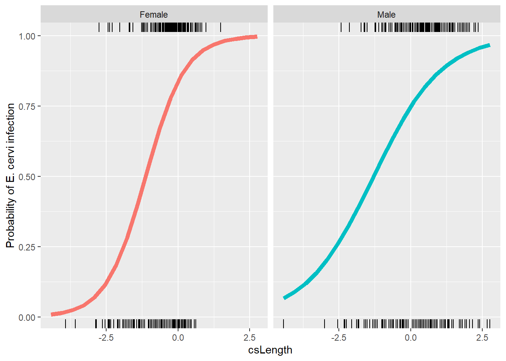
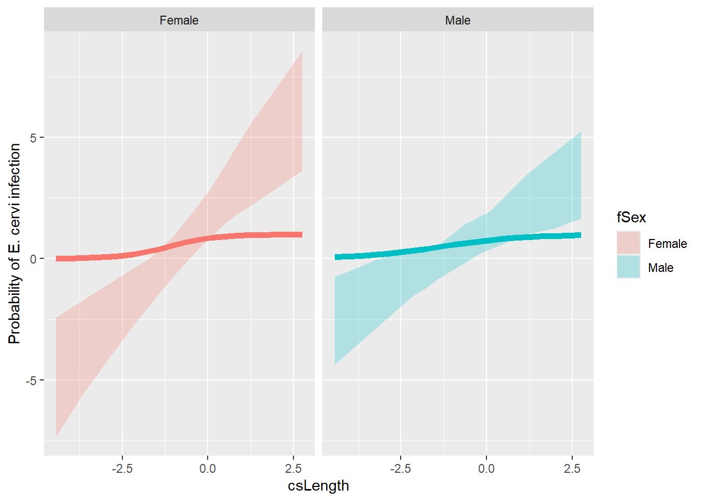
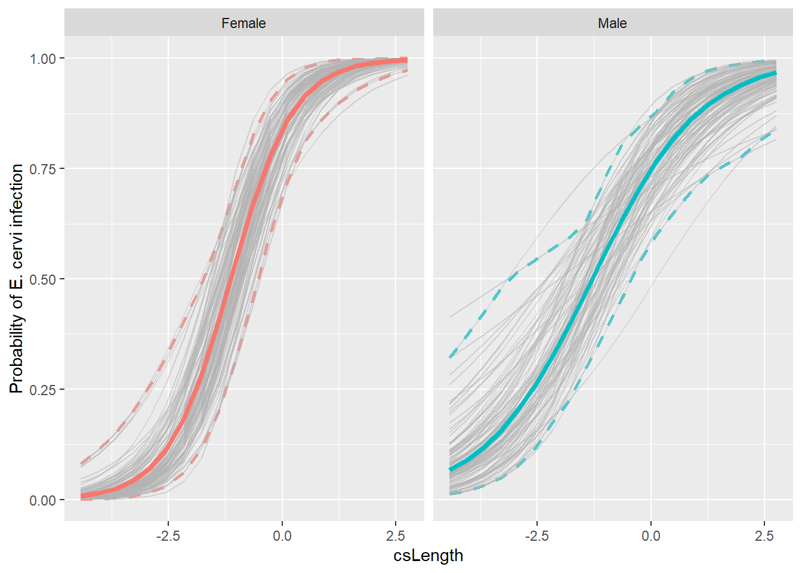

Confidence Intervals for Mixed Models
Assigned Reading:
- Shipley, J. R., Twining, C. W., Taff, C. C., Vitousek, M. N., & Winkler, D. W. (2022). Selection counteracts developmental plasticity in body-size responses to climate change. Nature Climate Change, 12(9), 863-868.
- Christensen, S. A., Ruder, M. G., Williams, D. M., Porter, W. F., & Stallknecht, D. E. (2020). The role of drought as a determinant of hemorrhagic disease in the eastern United States. Global Change Biology, 26(7), 3799-3808.
Overview
We’ll continue to look at Linear and Generalized linear mixed effects models, emphasizing how to get confidence intervals on the predictions. To do that, we’ll use our new friend: the bootstrapping method. Below is an example of bootstrapping used to estimate confidence intervals for the analysis in the assigned Shipley et al. (2022) paper:

# List of packages necessary to run this script:
require(librarian, quietly = TRUE)
library(librarian)
shelf(tidyverse, broom.mixed, broom, lme4, boot, snow, here,
lib = tempdir())
# Set seed
set.seed(7871)
# Set the web address where R will look for files from this repository
# Do not change this address
repo_url <- "https://raw.githubusercontent.com/LivingLandscapes/Course_EcologicalModeling/master/"
# Load data
ecervi <-
read.table(paste0(repo_url, "/data/DeerEcervi.txt"),
header = TRUE)Confidence intervals for LMMs
We’ll start with something easy - a linear mixed effects model with the sleepstudy data.
ssBase <- ggplot(sleepstudy, aes(x = Days, y = Reaction)) +
geom_point(aes(color=Subject)) +
scale_color_discrete() +
labs(x="Days with no sleep",
y="Reaction time [ms]")
ssBase + geom_smooth(method="lm")+ facet_wrap(~Subject) + guides(color=FALSE)So there’s the basic data, and now we fit a mixed model with both the intercept and Days varying across subjects.
# fit a mixed model
summary(ss.mm <- lmer(Reaction ~ Days + (1 + Days | Subject),
sleepstudy,REML=FALSE))## Linear mixed model fit by maximum likelihood ['lmerMod']
## Formula: Reaction ~ Days + (1 + Days | Subject)
## Data: sleepstudy
##
## AIC BIC logLik deviance df.resid
## 1763.9 1783.1 -876.0 1751.9 174
##
## Scaled residuals:
## Min 1Q Median 3Q Max
## -3.9416 -0.4656 0.0289 0.4636 5.1793
##
## Random effects:
## Groups Name Variance Std.Dev. Corr
## Subject (Intercept) 565.48 23.780
## Days 32.68 5.717 0.08
## Residual 654.95 25.592
## Number of obs: 180, groups: Subject, 18
##
## Fixed effects:
## Estimate Std. Error t value
## (Intercept) 251.405 6.632 37.907
## Days 10.467 1.502 6.968
##
## Correlation of Fixed Effects:
## (Intr)
## Days -0.138Let’s check the profile confidence limits on the estimates before we look at getting confidence limits on predictions.
# remember this is SLOOOOW
#ss.parms <- tidy(ss.mm, conf.int=TRUE, conf.method="profile")
# unfortunately tidy.merMod doesn't do profile intervals
confint(ss.mm, oldNames = FALSE)## 2.5 % 97.5 %
## sd_(Intercept)|Subject 14.3814916 37.7160187
## cor_Days.(Intercept)|Subject -0.4815004 0.6849861
## sd_Days|Subject 3.8011648 8.7533667
## sigma 22.8982662 28.8579973
## (Intercept) 237.6806955 265.1295147
## Days 7.3586533 13.5759187So the most interesting thing here is that the confidence limit for the correlation coefficient includes 0. The other thing to recognize is that all of the variance parameters are uncertain as well. Even the residual variance has a range of possible values! This is the uncertainty that is not easy to include in our confidence intervals on predictions.
What I want to do now is get confidence intervals on predicted values
so we can add nice confidence polygons to our predicted plots. Unlike
glm() or lm() objects, the predict function
for merMod objects produced by (g)lmer()
doesn’t give us standard errors or confidence limits. The reason given
by the developers is that there isn’t a clear method to account for the
variance in the random effects parameters. Recognizing that these
parameters are uncertain would increase the width of the confidence
intervals on our predictions.
First I want to make a plot that has both the population level fitted values and the subject level lines. This is going to get messy.
## [1] "Reaction" "Days" "Subject" ".fitted" ".resid" ".hat"
## [7] ".cooksd" ".fixed" ".mu" ".offset" ".sqrtXwt" ".sqrtrwt"
## [13] ".weights" ".wtres"augment() gives us a bunch of columns for merMod
objects; the one we’re interested in here is .fitted. There
is also a column .mu that has identical values in it. For a
model that has a link function other than the identity link (e.g. the
default logit link for the binomial family) .fixed will be
on the link scale, and .mu will be on the
response scale. We’ll come back to that in the next
example.
# x is inherited from ssBase
# if we don't specify color=Subject in geom_line()
# we only get one line ... oh, because I specified color=Subject
# in geom_points() not ggplot()
ssBase + geom_line(aes(y=.fitted, color=Subject), data=ss.fitted) + guides(color=FALSE)So each line represents the fitted values including the effects of the random perturbations on the intercept and slope. Now get the population level predictions using predict() and a new data.frame.
nd <- data.frame(Days=0:9)
# re.form tells predict what to do with the random effects
# ~0 says ignore them; population level predictions
nd$PopPred <- predict(ss.mm, newdata=nd, re.form=~0)
ssBase + geom_line(aes(y=.fitted, color=Subject), data=ss.fitted, alpha=0.5) +
geom_line(aes(y=PopPred), data=nd, size=2) +
guides(color=FALSE)
Reaction time as a function of days without sleep. Fine lines are subject level fitted values, thick black line is the population level prediction.
OK, but we want to know how much confidence to have in that
prediction. Really the only option here is to use bootstrapping. This is
slow, but gets all the uncertainty in our prediction. Fortunately
lme4 includes a function bootMer to do
bootstrapping by generating a random sample of data and then fitting the
model to that new data. Repeat that 1000’s of times and you can get a
distribution of possible model fits. Unfortunately we have to write a
function to extract the predictions from the random samples the way we
want them. Start by getting a single random sample.
# bootMer takes a fitted merMod object
# then the function that takes a fitted merMod object and returns the thing we want as a vector
# fitted() will give us the coefficients from a fit
test <- bootMer(ss.mm, fixef)
# a (fairly) compact look at the *str*ucture of an object
str(test)## List of 10
## $ t0 : Named num [1:2] 251.4 10.5
## ..- attr(*, "names")= chr [1:2] "(Intercept)" "Days"
## $ t : num [1, 1:2] 249.5 10.6
## ..- attr(*, "dimnames")=List of 2
## .. ..$ : NULL
## .. ..$ : chr [1:2] "(Intercept)" "Days"
## $ R : int 1
## $ data :'data.frame': 180 obs. of 3 variables:
## ..$ Reaction: num [1:180] 250 259 251 321 357 ...
## ..$ Days : num [1:180] 0 1 2 3 4 5 6 7 8 9 ...
## ..$ Subject : Factor w/ 18 levels "308","309","310",..: 1 1 1 1 1 1 1 1 1 1 ...
## ..- attr(*, "terms")=Classes 'terms', 'formula' language Reaction ~ Days + (1 + Days + Subject)
## .. .. ..- attr(*, "variables")= language list(Reaction, Days, Subject)
## .. .. ..- attr(*, "factors")= int [1:3, 1:2] 0 1 0 0 0 1
## .. .. .. ..- attr(*, "dimnames")=List of 2
## .. .. .. .. ..$ : chr [1:3] "Reaction" "Days" "Subject"
## .. .. .. .. ..$ : chr [1:2] "Days" "Subject"
## .. .. ..- attr(*, "term.labels")= chr [1:2] "Days" "Subject"
## .. .. ..- attr(*, "order")= int [1:2] 1 1
## .. .. ..- attr(*, "intercept")= int 1
## .. .. ..- attr(*, "response")= int 1
## .. .. ..- attr(*, ".Environment")=<environment: R_GlobalEnv>
## .. .. ..- attr(*, "predvars")= language list(Reaction, Days, Subject)
## .. .. ..- attr(*, "dataClasses")= Named chr [1:3] "numeric" "numeric" "factor"
## .. .. .. ..- attr(*, "names")= chr [1:3] "Reaction" "Days" "Subject"
## .. .. ..- attr(*, "predvars.fixed")= language list(Reaction, Days)
## .. .. ..- attr(*, "varnames.fixed")= chr [1:2] "Reaction" "Days"
## .. .. ..- attr(*, "predvars.random")= language list(Reaction, Days, Subject)
## ..- attr(*, "formula")=Class 'formula' language Reaction ~ Days + (1 + Days | Subject)
## .. .. ..- attr(*, ".Environment")=<environment: R_GlobalEnv>
## $ seed : int [1:626] 10403 432 -1582529988 2053175058 -1014989811 -156092601 32191790 495494280 -620179061 -274560663 ...
## $ statistic:function (object, ...)
## $ sim : chr "parametric"
## $ call : language bootMer(x = ss.mm, FUN = fixef)
## $ ran.gen : chr "simulate(<lmerMod>, 1, *)"
## $ mle :List of 3
## ..$ beta : num [1:2] 251.4 10.5
## ..$ theta: Named num [1:3] 0.9292 0.0182 0.2226
## .. ..- attr(*, "names")= chr [1:3] "Subject.(Intercept)" "Subject.Days.(Intercept)" "Subject.Days"
## ..$ sigma: num 25.6
## - attr(*, "class")= chr [1:2] "bootMer" "boot"
## - attr(*, "bootFail")= int 0
## - attr(*, "boot.all.msgs")=List of 3
## ..$ factory-message: 'table' int[0 (1d)]
## .. ..- attr(*, "dimnames")=List of 1
## .. .. ..$ : NULL
## ..$ factory-warning: 'table' int[0 (1d)]
## .. ..- attr(*, "dimnames")=List of 1
## .. .. ..$ : NULL
## ..$ factory-error : 'table' int[0 (1d)]
## .. ..- attr(*, "dimnames")=List of 1
## .. .. ..$ : NULL
## - attr(*, "boot_type")= chr "boot"There’s alot of stuff in there, most of which relates to internal
stuff that would allow us to recreate the simulation. We are mostly
interested in t0 and t. t0 is the
result of applying our FUN to the original object. In this case it gives
us a vector of the fixed effects coefficients. t is a
matrix of the simulation output. In each row is the result of our FUN
applied to a simulated result. By default bootMer only does
one simulation. If we want more:
## (Intercept) Days
## [1,] 253.6133 11.429613
## [2,] 240.6025 10.097065
## [3,] 249.0604 12.279100
## [4,] 249.2493 10.150127
## [5,] 250.2292 9.919277
## [6,] 241.9880 12.863445
## [7,] 253.0603 9.167405
## [8,] 259.1846 8.653282
## [9,] 242.3805 9.832255
## [10,] 246.8435 11.135679If we set nsim = 10000 and then took quantiles of the
resulting columns, we could get bootstrapped confidence limits on our
fixed effects. That’s what is happening when we do
confint(ss.mm, method="boot"). We want a function that
makes a prediction from a fitted model. Just using
predict() won’t work, because the function only takes one
argument, the fitted model. So we have to make a “wrapper” that will
call predict() with the right arguments.
myFunc <- function(mm){
# forgot the re.form argument on first try
predict(mm, newdata=nd, re.form=~0)
}
myFunc(ss.mm) # works## 1 2 3 4 5 6 7 8
## 251.4051 261.8724 272.3397 282.8070 293.2742 303.7415 314.2088 324.6761
## 9 10
## 335.1434 345.6107## 1 2 3 4 5 6 7 8
## [1,] 256.399 265.7822 275.1654 284.5486 293.9318 303.315 312.6982 322.0814
## 9 10
## [1,] 331.4646 340.8478OK, this next bit takes a while … about 1 minute on my (old) home computer
## 1 2 3 4 5 6 7 8
## [1,] 240.5466 250.0874 259.6282 269.1690 278.7099 288.2507 297.7915 307.3323
## [2,] 251.5451 261.2985 271.0518 280.8051 290.5585 300.3118 310.0651 319.8184
## [3,] 257.8782 268.9857 280.0932 291.2008 302.3083 313.4158 324.5233 335.6309
## [4,] 257.9161 267.2057 276.4954 285.7851 295.0748 304.3645 313.6542 322.9438
## [5,] 259.9344 272.1300 284.3256 296.5212 308.7168 320.9124 333.1080 345.3036
## [6,] 253.6331 263.4394 273.2457 283.0520 292.8583 302.6647 312.4710 322.2773
## 9 10
## [1,] 316.8732 326.4140
## [2,] 329.5718 339.3251
## [3,] 346.7384 357.8459
## [4,] 332.2335 341.5232
## [5,] 357.4992 369.6948
## [6,] 332.0836 341.8899Now we want quantiles of each column of that thing, turned around so
the columns are rows like the original nd.
# apply(xx, MARGIN = 2, FUN, ...) 'applies' FUN to each column (because MARGIN = 2). arguments in ... get passed to FUN
# t() transposes the result
predCL <- t(apply(bigBoot$t, MARGIN = 2,
FUN = quantile,
probs=c(0.025, 0.975)))
# ggplot only works with data.frames so
# add to nd
# '%' in column names is a disaster so be explicit
nd$lci <- predCL[,1]
nd$uci <- predCL[,2]
ssBase + geom_line(aes(y=.fitted, color=Subject), data=ss.fitted, alpha=0.5) +
geom_line(aes(y=PopPred), data=nd, size=2) +
geom_ribbon(aes(x=Days, ymin=lci, ymax=uci),
data=nd, inherit.aes = FALSE,
alpha=0.2) +
guides(color=FALSE)So that’s pretty nice. I can add a geom_smooth() to show how much wider the confidence intervals are compared to ignoring all the extra variability.
ssBase + geom_line(aes(y=.fitted, color=Subject),
data=ss.fitted, alpha=0.5) +
geom_line(aes(y=PopPred), data=nd, size=2) +
# set inherit.aes to FALSE here otherwise
# geom_ribbon looks for a y aesthetic
# called Reaction
geom_ribbon(aes(x=Days, ymin=lci, ymax=uci),
data=nd, inherit.aes = FALSE,
alpha=0.2) +
geom_smooth(method="lm", alpha=0.8,
color="black") +
guides(color=FALSE)Reaction time as a function of days without sleep. Fine lines are subject level fits, thick line is population level prediction. The outer ribbon are bootstrapped 95% confidence limits. The inner ribbon is a 95% confidence limit ignoring between subject variation and random effects uncertainty.
It is interesting that there isn’t much difference when Days == 0. Note that you wouldn’t ever do this in practice! However, it might be nice to build a few polygons at different levels of confidence.
predCL <- t(apply(bigBoot$t, MARGIN = 2,
FUN = quantile,
probs=c(0.05, 0.95,
0.1, 0.9,
0.25, 0.75)))
# try making it into a dataframe
predCL <- data.frame(predCL)
# names(predCL)
# so puts a X at the front bc can't start with a number,
# and replaces % with .
# put them into nd
nd <- bind_cols(nd, predCL)
# brute force multi-ribbons:
ssBase +
geom_line(aes(y=.fitted, color=Subject),
data=ss.fitted, alpha=0.5) +
geom_line(aes(y=PopPred), data=nd, size=2) +
# set inherit.aes to FALSE here otherwise
# geom_ribbon looks for a y aesthetic
# called Reaction
geom_ribbon(aes(x=Days, ymin=lci, ymax=uci),
data=nd, inherit.aes = FALSE,
alpha=0.2) +
# add 90% ribbon
geom_ribbon(aes(x=Days, ymin=X5., ymax=X95.),
data=nd, inherit.aes = FALSE,
alpha=0.2) +
# add 80% ribbon
geom_ribbon(aes(x=Days, ymin=X10., ymax=X90.),
data=nd, inherit.aes = FALSE,
alpha=0.2) +
# add 50% ribbon
geom_ribbon(aes(x=Days, ymin=X25., ymax=X75.),
data=nd, inherit.aes = FALSE,
alpha=0.2) +
guides(color=FALSE)Adding multiple transparent ribbons to match 95%, 90%, 80% and 50% confidence limits.
That doesn’t look as good as I’d hoped. The idea here is to draw the eye closer to the expected value rather than the outer edges of the confidence region.
Doing it with a GLMM
So now we want to redo the deer model from last lab.
ecervi <- ecervi %>%
mutate(Ecervi.pa = Ecervi > 0,
fSex = factor(Sex, labels=c("Male","Female")),
cLength = Length - mean(Length),
csLength = cLength / sd(Length))
contrasts(ecervi$fSex) <- contr.sum(2)
M0 <- glmer(Ecervi.pa~fSex*csLength+(1 + csLength | Farm),
data=ecervi,family=binomial)
lr = range(ecervi$csLength)
nd <- expand.grid(csLength = seq(lr[1], lr[2], length=20),
fSex=factor(levels(ecervi$fSex)))
nd$pp = predict(M0,newdata=nd,
type="response", re.form=~0)
ggplot(nd, aes(x=csLength, y=pp, col=fSex)) +
geom_line(alpha=0.5) +
ylab("Probability of E. cervi infection") +
geom_line(aes(x=csLength, y=pp, col=fSex), data=nd, inherit.aes = FALSE, linewidth=2) +
geom_rug(aes(x=csLength), data=filter(ecervi, Ecervi.pa),sides="t", inherit.aes = FALSE) +
geom_rug(aes(x=csLength), data=filter(ecervi, !Ecervi.pa),sides="b", inherit.aes = FALSE) +
facet_wrap(~fSex) +
guides(color=FALSE)
OK, now we want to do the bootstrap. But fitting this model already is slow, so doing it 1000 times is even slower! Bootstrapping is one of the things that benefits from parallel computing very easily. The bit of code below sets up a “cluster” on my computer and splits the computation up 4 ways. 4 times faster. Most modern CPU’s have multiple cores that can run independently. In normal operation R uses just one core. Depending on how many cores your computer has, running this code in parallel could speed up this computation by a lot.
# Make the cluster
cl <- makeCluster(4, type = "SOCK")
# Export to the cluster
clusterEvalQ(cl, library("lme4"))## [[1]]
## [1] "lme4" "Matrix" "snow" "stats" "graphics" "grDevices"
## [7] "utils" "datasets" "methods" "base"
##
## [[2]]
## [1] "lme4" "Matrix" "snow" "stats" "graphics" "grDevices"
## [7] "utils" "datasets" "methods" "base"
##
## [[3]]
## [1] "lme4" "Matrix" "snow" "stats" "graphics" "grDevices"
## [7] "utils" "datasets" "methods" "base"
##
## [[4]]
## [1] "lme4" "Matrix" "snow" "stats" "graphics" "grDevices"
## [7] "utils" "datasets" "methods" "base"clusterExport(cl, list("myFunc", "M0", "cl"))
# now we pass the cluster object to bootMer
# note that I can use the same myFunc!
bigBoot2 <- bootMer(M0, myFunc, nsim = 100,
parallel = "snow",
cl = cl)
stopCluster(cl) # takes a long time ...
# # Without running parallel
# bigBoot2 <- bootMer(M0, myFunc, nsim=100)# the object returned by bootMer is of type boot
# and there are some useful functions there.
envPred <- boot::envelope(bigBoot2)
str(envPred)## List of 7
## $ point : num [1:2, 1:40] -0.75 -4.355 -0.528 -3.885 -0.306 ...
## ..- attr(*, "dimnames")=List of 2
## .. ..$ : NULL
## .. ..$ : chr [1:40] "1" "2" "3" "4" ...
## $ overall: num [1:2, 1:40] -0.351 -4.511 -0.246 -3.972 -0.141 ...
## ..- attr(*, "dimnames")=List of 2
## .. ..$ : NULL
## .. ..$ : chr [1:40] "1" "2" "3" "4" ...
## $ k.pt : num [1:2] 2 99
## $ err.pt : num [1:2] 0.0396 0.2376
## $ k.ov : num [1:2] 1 100
## $ err.ov : num [1:2] 0.0198 0.1287
## $ err.nom: num [1:2] 0.05 0.05The matrix point in there is the “pointwise” 95%
confidence intervals for each of the 40 rows in nd. The
error rate for those intervals is 5% on each value, which means that 24%
of the points will be outside the interval over the entire curve. The
matrix overall expands those limits until the number of
points over the entire curve is 5%. Time to add these to a plot. First
we have to get them into the nd data.frame.
nd$lower.point <- envPred$point[1,]
nd$upper.point <- envPred$point[2,]
ggplot(nd, aes(x=csLength, y=pp, col=fSex)) +
geom_line(alpha=0.5) +
ylab("Probability of E. cervi infection") +
geom_line(aes(x=csLength, y=pp, col=fSex), data=nd, inherit.aes = FALSE, size=2) +
geom_ribbon(aes(x=csLength, ymin=lower.point, ymax=upper.point, fill=fSex),
data=nd, inherit.aes=FALSE,
alpha = 0.25) +
facet_wrap(~fSex) +
guides(color=FALSE)
OK. That’s not right! Look at the range, those values go from -5 to nearly 8. They can’t be probabilities.
And in fact they aren’t. Back when we created myFunc(),
we just used predict() without specifying the argument
type (think back to Homework #1 glm() fits).
By default, predict() produces values on the link scale,
the scale of the linear predictor part of the model. But we want to plot
probabilities, so we have two choices.
- change myFunc to use
type="response"and rerunbootMer() - transform the link scale values to probabilities with the logistic function.
I’m going with (2), because it took a while to do (1) the first time.
# boot::inv.logit() does the job
nd$lower.point <- inv.logit(envPred$point[1,])
nd$upper.point <- inv.logit(envPred$point[2,])
# Make the bootstrap object into a nice data.frame for ggplot
bigboot2_df <-
as.data.frame(apply(bigBoot2$t, 1, inv.logit)) %>%
cbind(nd %>% dplyr::select(c("csLength", "fSex"))) %>%
pivot_longer(cols = starts_with("V"),
names_to = "Sample",
values_to = "Estimate")
# Create a prediction with all bootstrap samples similar to Shipley et al. (2022)
ggplot() +
# and don't forget to change alpha
geom_line(aes(x=csLength, y=lower.point, color=fSex),
data=nd,
linetype = 2,
linewidth = 1,
inherit.aes=FALSE,
alpha=0.75) +
geom_line(aes(x=csLength, y=upper.point, color=fSex),
data=nd,
linetype = 2,
linewidth = 1,
inherit.aes=FALSE,
alpha=0.75) +
geom_line(data = bigboot2_df,
aes(x = csLength, y = Estimate, group = Sample),
color = "grey70",
alpha = 0.5) +
geom_line(aes(x=csLength, y=pp, col=fSex),
data = nd,
alpha=0.5) +
ylab("Probability of E. cervi infection") +
geom_line(aes(x=csLength, y=pp, col=fSex),
data = nd,
inherit.aes = FALSE,
linewidth = 1.5) +
facet_wrap(~fSex) +
guides(color=FALSE, fill=FALSE)